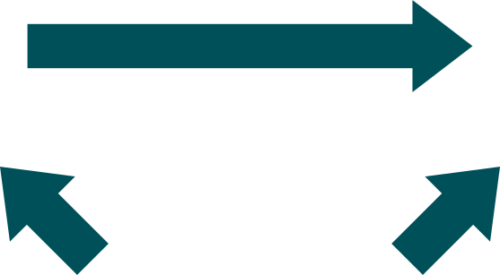

Veja a imagem a seguir. Clique em cada um dos termos para conhecer uma situação hipotética:
Ao avaliar a relação entre fumo e câncer de pulmão, podemos ajustar para o consumo de álcool.
x
Ou seja, ao realizar uma análise bivariada, olhando apenas fumo e câncer, estamos ignorando que parte do efeito observado pode ser devido ao consumo de álcool.
x
Por quê? Pelo fato de que fumantes tendem a consumir mais álcool, e um consumo aumentado de álcool também está associado a maior incidência de câncer de pulmão.
x